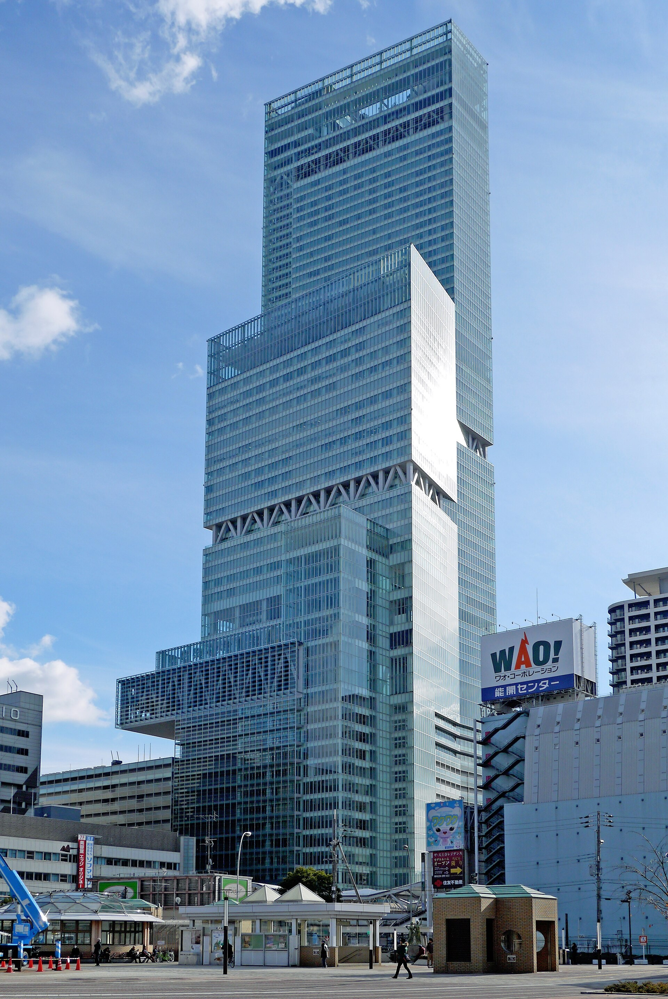

🗼 全關西最高 300m ✕ 西元593年古剎 ✕ 新世界串炸天王寺・飛鳥千年古剎 ✕ 新世界炸串 ✕ HARUKAS 300m 雲端夕陽 O 型環線
起訖樞紐：地鐵御堂筋線「天王寺站」4 號出口（梅田搭御堂筋線 15 分鐘直達）。
適合情境：熱愛深度日本古剎文化 ✕ 追求全關西最高、最壯觀的 360 度無死角雲端落日。
📜 飛鳥時代信仰、昭和下町與 300m 雲端哲學
• 西元 593 年四天王寺「日本最初官辦古寺」：推動日本佛教的聖德太子建立，距今已有 1,430 多年歷史。伽藍配置嚴格遵循飛鳥時代規格（中門、五重塔、金堂、講堂成一直線），太子更在此設立「四箇院」（敬田院、施藥院、療病院、悲田院），開創日本最早的免費醫療與救濟制度。五重塔在夕陽暮光下的剪影極具神聖之美。
• 新世界與通天閣「昭和下町烏托邦」：1912 年以巴黎艾菲爾鐵塔和紐約柯尼島為藍本建造的繁華娛樂區，如今成為保留濃郁昭和庶民氣息的聖地。老舖「八重勝」傳承數十年的極薄酥脆麵衣與味噌牛筋「土手燒」，是老大阪人最愛的靈魂美食。
• 阿倍野 HARUKAS 300m 建築奇蹟：海拔 300 公尺的日本第一高樓。60 樓擁有全落地玻璃 360 度空中迴廊，58 樓則有三層挑高的露天木甲板空中庭園。黃昏時分，夕陽將整個大阪灣與遠方的明石海峽大橋染成金紅色，視覺震撼無可比擬。
🗺️ 順向 O 型動線分步指引 (不走回頭路)
地鐵御堂筋線「天王寺站」4 號出口出發，北向步行 10 分鐘進入四天王寺：漫步在莊嚴肅穆的石板庭園中，參拜飛鳥時代五重塔，拍夕陽暮色下的古剎剪影。
穿過天王寺公園步行 10 分鐘進入新世界：
・在仰望通天閣的懷舊小巷中，品嚐排隊名店「八重勝 (Yaekatsu)」現炸牛串、海老與蘆筍串。
・必點白味噌長時間燉煮至軟爛入味的牛筋「土手燒 (どて焼き)」。
步行 8 分鐘抵達日本第一高樓阿倍野 HARUKAS，搭高速電梯登上 300m 頂層：
・登上 58 樓挑高露天中庭木甲板吹風，遠眺大阪灣與明石海峽大橋夕陽落日。
・漫步 60 樓全落地玻璃迴廊，俯瞰整座大阪都會璀璨燈海。
HARUKAS B1 樓層直接連通地鐵天王寺站月台，搭乘御堂筋線 15 分鐘無縫直達梅田站，回 Granvia 飯店休息！
💬 社群旅人實戰評價精選
「HARUKAS 300 的視野完全震撼！傍晚在 58 樓木甲板喝咖啡看夕陽染紅整片大阪灣，接著全城夜景亮起，整個人被深深療癒，看完直接下樓搭地鐵 15 分鐘回到梅田，超級順暢！」—— TripAdvisor 旅人真實評價